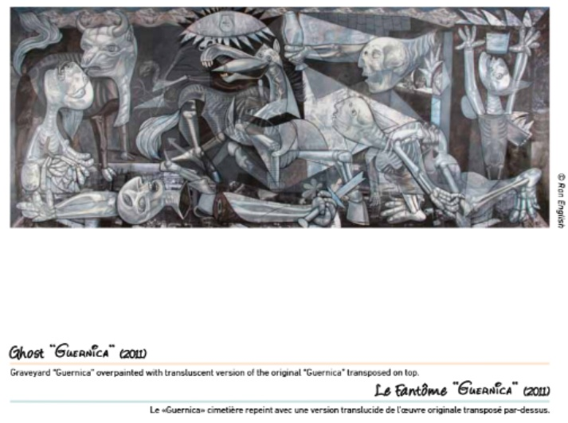

Exhibitions
Reimagining “Guernica” / La réinvention du “Guernica”, Museo de la Paz de Gernika, Gernika-Lumo, Bizkaia, Spain, April 4–December 10, 2017. Presented as a print on stretched canvas, not as the original painting.
Literature
Ron English, Death and the Eternal Forever (London: Korero Press, 2014), p. 146. ISBN 978-0957664920.

Ron English, Original Grin: The Art of Ron English (Paris: Cernunnos, 2019), p. 215. ISBN 978-2374950938.

Museo de la Paz de Gernika, Ron English: Reimagining “Guernica” / La réinvention du “Guernica” (Gernika-Lumo: Museo de la Paz de Gernika, 2017), digital exhibition catalogue / flip-book.
“50 варијации на „Герника“ од Пикасо,” Окно.мк, July 11, 2014.

Notes
Also known as Ghost Guernia.
This work references Pablo Picasso’s Guernica.
The composition is documented in the Museo de la Paz de Gernika’s digital exhibition catalogue / flip-book for Reimagining “Guernica” / La réinvention du “Guernica”.
The work also appears in online articles and interviews related to Ron English’s Guernica-based body of work and wider reinterpretations of Picasso’s Guernica.
Also known as Ghost Guernia.
This work references Pablo Picasso’s Guernica.
Ancillary Documentation




Selected Online Circulation
Selected examples of the work’s online circulation, reproduction, or discussion. This list is not exhaustive; it is intended to document representative appearances of the image beyond formal exhibition and publication records.